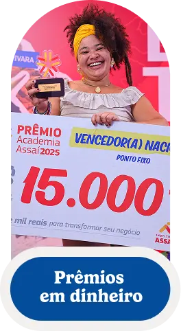
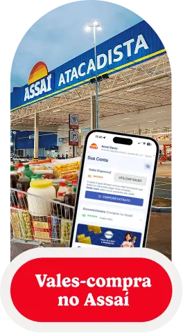
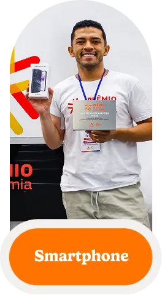
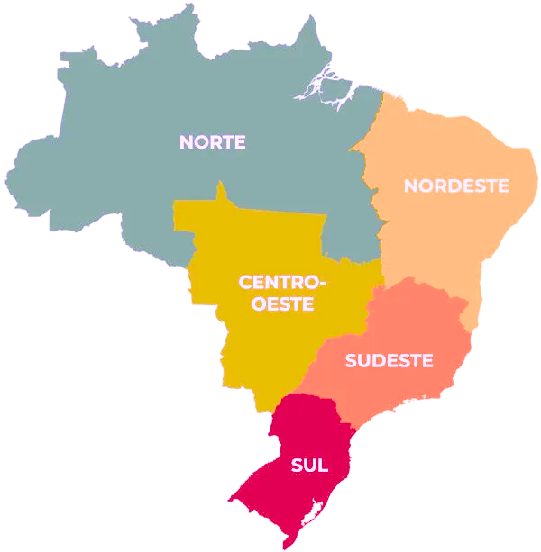
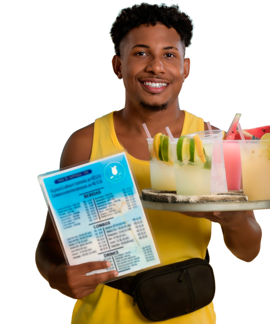
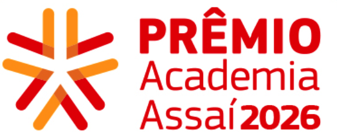

Preparados para
VOTAÇÃO
PÚBLICA
Conheça os 20 Vencedores Regionais do Prêmio Academia Assaí 2026, descubra como eles se prepararam para crescer e escolha quatro negócios participando da votação pública.
Um minuto. Esse foi o tempo que cada Vencedor Regional do Prêmio Academia Assaí 2026 teve para mostrar o que vende, para quem vende, como cuida das finanças e o que pretende fazer para crescer.
O exercício parece simples até chegar a vez de falar. Quando a apresentação precisa caber em 60 segundos, qualquer dúvida sobre o cliente, os números ou o diferencial do negócio aparece depressa.
Os critérios usados na seleção dos 20 vencedores regionais funcionam como um roteiro para observar a própria operação: está claro quem é o cliente? O diferencial cabe em uma frase? As finanças estão organizadas? Existe um plano concreto para usar um novo recurso?
Se você tivesse um minuto, conseguiria explicar por que seu negócio merece crescer?
O caminho até os 20 Vencedores Regionais
A nona edição do Prêmio Academia Assaí começou com mais de 7 mil inscritos de diferentes regiões do país. Todos atuam no setor de alimentação, em negócios formais ou informais, com faturamento anual de até R$ 360 mil.
A primeira etapa combinou o desempenho em um curso de finanças com critérios socioeconômicos. Ao final, 2.250 empreendedores receberam R$ 400 em crédito no aplicativo Meu Assaí e avançaram para uma formação de finanças mais aprofundada.



Para chegar ao grupo de 20 vencedores regionais, os participantes responderam a um questionário baseado nos conhecimentos adquiridos ao longo do Curso de Finanças Avançado, preencheram um cadastro detalhado e gravaram um vídeo de até um minuto. A seleção também considerou as informações do negócio e o vídeo enviado.
O resultado formou um retrato variado de quem vende comida no Brasil: há café e bistrô, mingau, alimentos amazônicos, espetinho, sorvete, geleias, conservas, hambúrguer, confeitaria, açaí, cozinha saudável e farofa, entre outros negócios.
20 negócios chegaram à etapa nacional:

3 7 2 7 1VOTAÇÃO PÚBLICA
Em 2026, o Prêmio Academia Assaí traz uma novidade: pela primeira vez, a escolha dos 4 Vencedores Nacionais conta com uma etapa de votação pública, ampliando a participação da sociedade em um dos momentos mais relevantes da premiação.
A votação popular é online, dentro do período de 17/08 a 14/09 de 2026, e tem peso de 20%. Os outros 80% serão definidos pela banca julgadora.

Pode ser você!
Quem acompanha os perfis consegue comparar produtos, propostas e planos de crescimento de negócios de várias regiões — e observar como cada empreendedor traduz a própria operação em uma história compreensível.
Na plataforma de votação, cada perfil apresenta informações sobre o negócio e um vídeo de até um minuto. Para participar, basta conhecer as histórias e selecionar quatro negócios.
Você poderia estar entre os vencedores regionais? Saber os critérios pode te ajudar também:
A primeiro é sobre mercado. O empreendedor sabe quem compra, quem oferece algo parecido e qual motivo leva o cliente a escolher seu produto? Um diferencial consistente aparece no produto, no atendimento, no modo de vender ou no público atendido. Ele precisa ser reconhecível.
A segunda é financeira. O prêmio avaliou se o participante aplicou os conhecimentos aprendidos, organizou a gestão dos recursos e planejou como usaria o dinheiro recebido. Um plano como “comprar equipamentos” ganha força quando explica qual equipamento, que limite da produção ele resolve e como a compra poderá melhorar a operação.
A terceira é viabilidade. Tempo de atividade, presença no mercado e estrutura contam, mas o tamanho atual não decide sozinho. O que importa é mostrar que o negócio funciona, enfrenta os problemas do dia a dia e tem um caminho coerente para continuar gerando renda.
A comunicação completa o conjunto. Quem conhece a própria operação consegue explicar o que faz, para quem faz e onde quer chegar. O vídeo não precisa ter produção profissional — o regulamento, inclusive, não permitiu o uso de agências na gravação dos pitches. Clareza, objetividade e domínio do negócio foram os pontos avaliados.
Prêmio Academia Assaí:
impulso real e capacitação
A premiação reserva R$ 15 mil em cartão pré-pago para cada um dos quatro vencedores nacionais. Entre eles, o destaque nacional recebe mais R$ 10 mil e uma assessoria avançada.
A etapa nacional também prevê uma semana de imersão em São Paulo (SP), com workshops, vivências práticas, interação com fornecedores e elaboração de um plano de investimento. Os 20 Vencedores Regionais recebem R$ 4 mil em cartão pré-pago, R$ 600 no aplicativo Meu Assaí, smartphone e assessoria individual.
“As capacitações são uma parte essencial do Prêmio Academia Assaí. Ao trazer a temática finanças como tema central desta edição, buscamos apoiar os empreendedores para que seus negócios possam ser lucrativos e crescer de forma saudável”, explica Fabio Lavezo, gerente de Sustentabilidade e Investimento Social do Assaí.
A premiação termina com a escolha dos vencedores. As perguntas usadas para chegar até eles continuam abertas para qualquer empreendedor: quem compra de mim, por que me escolhe, quais números orientam minhas decisões e qual investimento resolveria o principal limite do negócio hoje?
